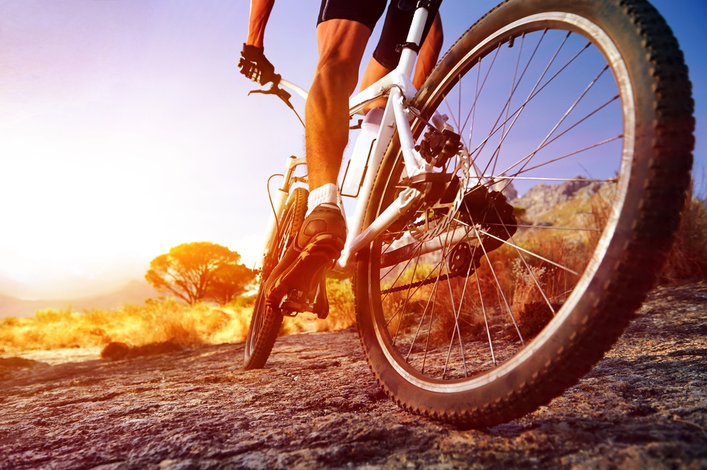

REALIZAR TRAJETOS CURTOS ATRAVÉS DE CAMINHADAS OU BICICLETAS
Escrito Por: Saymon Alexandre
Em uma pesquisa realizada pela Liberty Seguros com moradores de seis capitais brasileiras, 82% dos entrevistados declararam que gostariam de morar em uma cidade compacta em que o uso do carro fosse praticamente desnecessário, podendo deslocar-se de bicicleta ou a pé para o trabalho e demais atividades. A pesquisa demonstra que muita gente tem começado a se conscientizar dos múltiplos benefícios de trocar o carro por pedaladas e caminhadas. Afinal, essas são trocas saudáveis para quem as práticas e sustentáveis para o mundo. Para muitos, porém, as questões da segurança e da praticidade podem pesar na escolha na hora de trocar o carro pela bike ou pelas caminhadas. Mas se tiver atenção a alguns detalhes e atitudes, os trajetos de bicicleta ou a pé podem ficar mais práticos e seguros.
Antes de sair caminhando ou pedalando por quilômetros seguidos, observe os caminhos que pretende percorrer: se há obstáculos, se são seguros, se há calçadas e ciclovias, se há muitas subidas e descidas. Calcule também as distâncias e tempos de percurso, contando com a ajuda do Google Maps, em que você pode escolher o meio de transporte (por exemplo, se vai de bicicleta, a pé ou de transporte público).
Para que o exercício seja saudável e você não desista na primeira semana, lembre-se também que, em qualquer atividade física, a adaptação do corpo deve ser gradual. Então, se não está acostumado a percorrer longas distâncias, comece com trajetos menores e vá aumentando sua quilometragem aos poucos. Você pode começar caminhando pelo bairro, indo de bike a casa de um amigo e depois ir aumentando sua resistência para conseguir ir de bicicleta para o trabalho, por exemplo.
Referências Bibliográficas:
Troque o carro por pedaladas e caminhadas. O Seu Dinheiro Vale Mais. Disponível em:"https://www.oseudinheirovalemais.com.br/troque-o-carro-por-pedaladas-e-caminhadas/". Acesso em: 06 de abril de 2020.